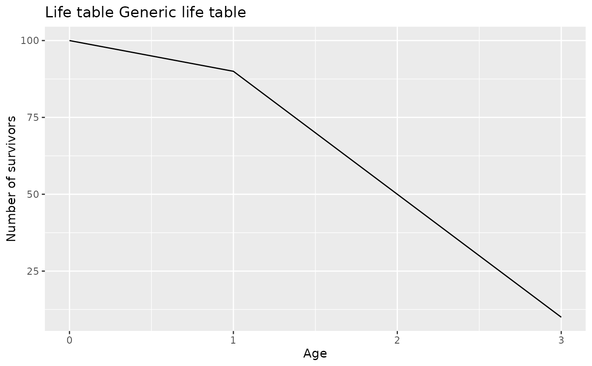

Produces a ggplot2 representation of the number of survivors by age.
The method is defined for `lifetable`; S3 dispatch also makes it
available for S4 subclasses such as `actuarialtable`.
Usage
# S3 method for class 'lifetable'
autoplot(object, ...)
Arguments
- object
A `lifetable` object, or an object inheriting from it.
- ...
Additional arguments passed to `ggplot2::geom_line()`.
Value
A `ggplot2` plot object.
Examples
lt <- new("lifetable", x = 0:3, lx = c(100, 90, 50, 10))
ggplot2::autoplot(lt)
#> Warning: Use of `data$x` is discouraged.
#> ℹ Use `x` instead.
#> Warning: Use of `data$lx` is discouraged.
#> ℹ Use `lx` instead.
